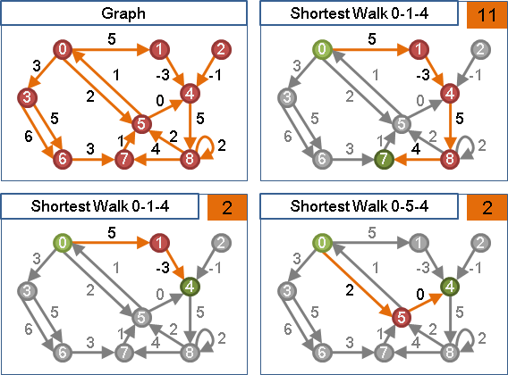
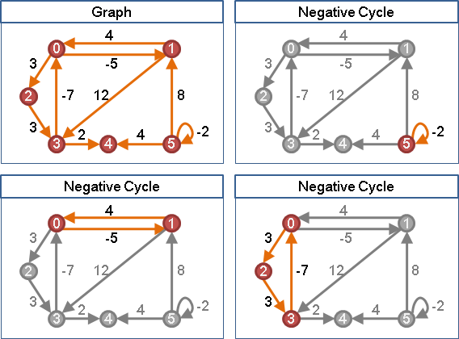
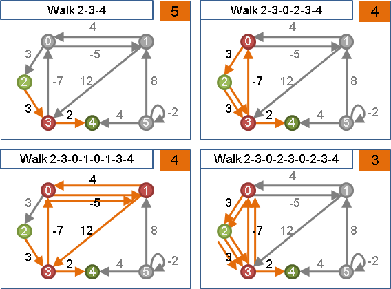
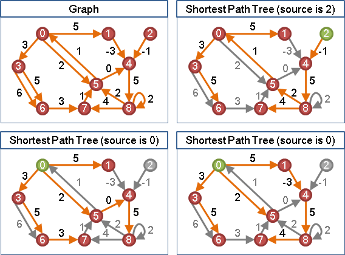
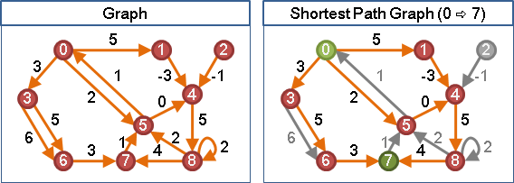
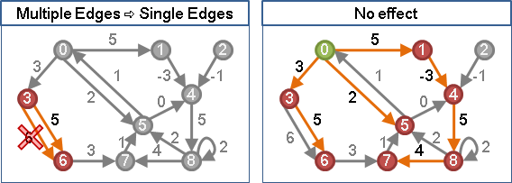
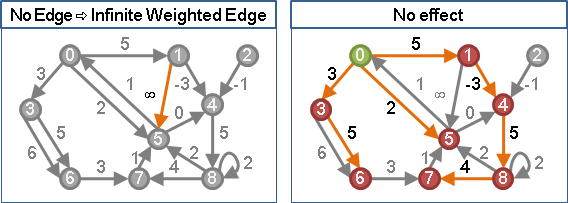
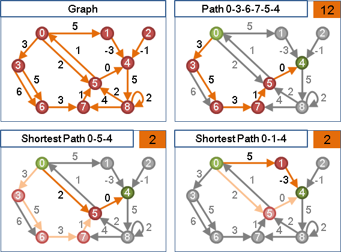
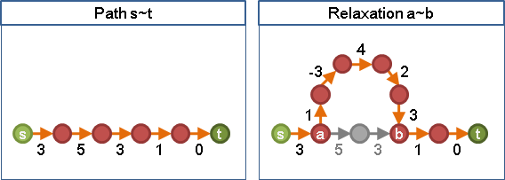

Shortest Walk
「最短途徑」是兩點之間權重最小的途徑。最短途徑不見得是邊最少、點最少的途徑。
「最短途徑」也可能不存在。兩點之間不連通、不存在途徑的時候，就沒有最短途徑。

Shortest Path
「最短路徑」和最短途徑相仿，差異在於路徑不可重複經過同樣的點和邊。
Shortest Walk與Shortest Path
權重為負值的環，稱作「負環（Negative Cycle）」。

當一張圖有負環，只要不斷去繞行負環，「最短途徑」的長度將是無限短。
當一張圖沒有負環，「最短途徑」等於「最短路徑」。

一條途徑重複經過同一條邊、同一個點，一定會讓途徑變長。由此可知：沒有負環的情況下，「最短途徑」等於「最短路徑」，決不會經過同樣的邊、同樣的點。
當一張圖有負環時，最短途徑無限短，我們不必再討論；當一張圖沒有負環時，最短途徑就是最短路徑，我們可以專心討論路徑、而非途徑。
Shortest Path Tree
在圖上選定一個起點，由起點到圖上各點的最短路徑們，形成一棵有向樹，稱作「最短路徑樹」。由於最短路徑不見得只有一條，所以固定起點的最短路徑樹也不見得只有一種。
最短路徑樹上的每一條最短路徑，都是由其它的最短路徑延展而得；截去末端之後，還是最短路徑。

Shortest Path Graph【尚無正式稱呼】
在圖上選定一個起點和終點，由起點到終點的所有最短路徑們，形成一張有向圖，稱作「最短路徑圖」，只有唯一一種。
當圖上每一條邊的權重都是正數，最短路徑圖是有向無環圖（Directed Acyclic Graph, DAG）。

兩點之間有多條邊
當一張圖的兩點之間有多條邊，可以留下一條權重最小的邊。這麼做不影響最短路徑。

兩點之間沒有邊（兩點不相鄰）
當一張圖的兩點之間沒有邊，可以補上一條權重無限大的邊。這麼做不影響最短路徑。

當圖的資料結構為adjacency matrix時，任兩點之間都一定要有一個權重值。要找最短路徑，不相鄰的兩點之間，權重值必須設定為一個超大數字，當作無限大；不可設定為零，以免計算錯誤。
最短路徑無限長、無限短
當起點無法到達終點，就沒有最短路徑了。這種情況常被解讀成：起點永遠走不到終點，導致最短路徑無限長。
當圖上有負環，不斷去繞行負環，導致最短路徑無限短。
Relaxation
最後介紹最短路徑演算法一個共通的重要概念「鬆弛」。
尋找兩點之間的最短路徑時，最直觀的方式莫過於：先找一條路徑，然後再找其他路徑，看看會不會更短，並記住最短的一條。
找更短的路徑並不困難。我們可以尋覓捷徑，以縮短路徑；也可以另闢蹊徑，取代原本的路徑。如此找下去，必會找到最短路徑。

尋覓捷徑、另闢蹊徑的過程，可以以數學方式來描述：現在要找尋起點為s、終點為t的最短路徑，而且現在已經有一條由s到t的路徑，這條路徑上會依序經過a及b這兩點（可以是起點和終點）。我們可以找到一條新的捷徑，起點是a、終點是b的捷徑，以這條捷徑取代原本由a到b的這一小段路徑，讓路徑變短。

找到捷徑以縮短原本路徑，便是Relaxation。
附錄
最短路徑演算法的功能類型：
Point-to-Point Shortest Path，點到點最短路徑：
給定起點、終點，求出起點到終點的最短路徑。一對一。
Single Source Shortest Paths，單源最短路徑：
給定起點，求出起點到圖上每一點的最短路徑。一對全。
All Pairs Shortest Paths，全點對最短路徑：
求出圖上所有兩點之間的最短路徑。全對全。
有向圖、最短路徑演算法的原理：
Label Setting：
逐步設定每個點的最短路徑長度，一旦設定後就不再更改。
負邊不適用。
Label Correcting：
設定某個點的最短路徑長度之後，之後仍可繼續修正，越修越美。
整個過程就是不斷重新標記每個點的最短路徑長度。
負邊適用。
無向圖、最短路徑演算法的原理：
當無向圖沒有負邊，尚可套用有向圖的演算法。
當無向圖有負邊，則必須使用「T-Join」。
問題複雜度：
最短途徑：P問題。
最短路徑：NP-complete問題；當圖上沒有負環，才是P問題。
最長途徑：每一條邊的權重添上負號，就變成最短途徑問題。
最長路徑：每一條邊的權重添上負號，就變成最短路徑問題。
古代人把walk叫做path、把path叫做simple path。
早期文獻說shortest path是P問題，
純粹是因為古代人與現代人用了不同的名詞定義。